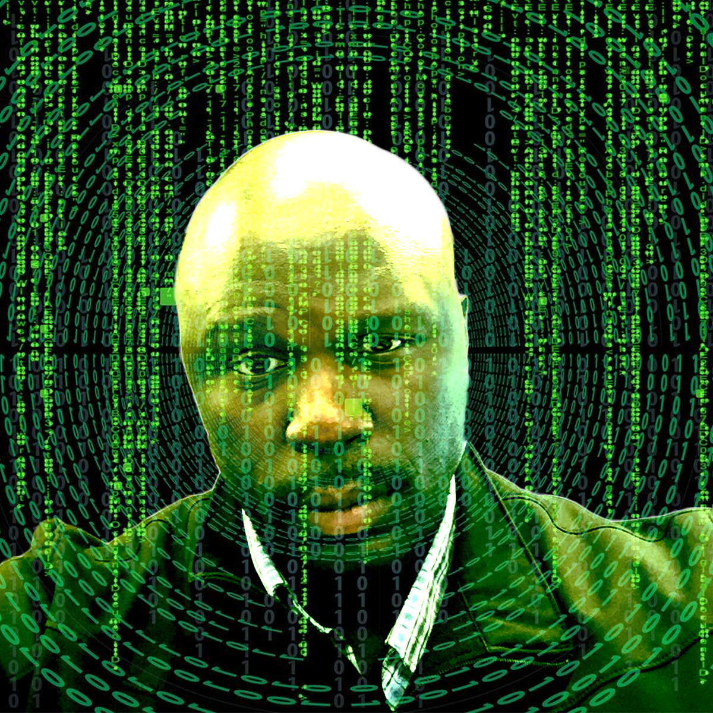
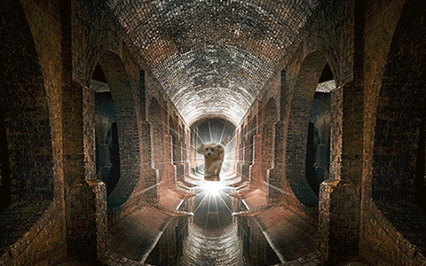

Gallery
Raster Portrait
Title: My Matrix Portrait
Software: Adobe Photoshop
Semester/Year: Spring 2020
When I started this image portrait I came up with the concept of my selfie with the “Matrix” background. This represents on how crowded my world is and ways I can escape. This also represents my many involvements with technology. I combined the 2 images to my portrait; they were simple as it can get. Unfortunately, I was not able to catch on the new concept of Adobe Photoshop quick enough for me make some adjustments.However, in the later days I was able to fool around with Photoshop long enough for me to get used to the program.
Vector Portrait
Title: Neon Darkness
Software: Adobe Illustrator
Semester/Year: Spring 2020
I put together this portrait because it represents my couple weeks I have been having lately. I chose these colors to represent the highs and lows of these weeks. Colors such as lavender and dark purple represents the negativity; whereas the colors like aqua, teal, and sky blue represents the positivity. The challenge was to get my selfie to match the background with Adobe illustrator and mix it with the vector style. I was able to add the neon colors to my selfies.
GIF Animation
Title: Doggy’s Odd Journey
Software: Adobe Photoshop
Semester/Year: Spring 2020
For this particular project, I have decided to do a GIF animation using pictures from my IPhone. I took 7 snapshots of my sister’s dog running across my living room. In addition to that, I included four pictures of different scenery. (See links on my Reference Section) It took some work and a lot of retries on getting my sister’s dog to run the way she did on pictures; however doggy treats and timing was to way to go in order for her to cooperate and believe me in took a lot of shots before I finally got the one that worked out. I wanted to simply tell the story of a dog who wonders all over the place and ends up wondering into very unique areas; of course the areas I selected were in fact unique. The most challenging thing about this project other than getting my sister’s dog to cooperate with my shots was combining all the different layers into one and placing them in one animation. I managed to do so by exporting them to different resolutions and merged them as one and was able to save them.
Audio
Click the play button
Title: Creepy Walker
Software: Audacity
Semester/Year: Spring 2020
When I put together this audio project the one thing that came to mind was horror and thriller. First off I credit my sister, it was her that gave me the idea to put together this piece. She is a big time horror fanatic and when I told her what I planned to do the first thing she said is to use the basement and the items down there. I wanted to tell the story of a mysterious person with an awkward breathing unknown to all simply walking down the basement and moving some stuff around. The question is why; I added features to indicate the awkwardness of this individual’s movement almost to the point of drawing suspicion as if this person has something to hide. The heavy breathing was to indicate that this person could be a serial killer with a disturbing secret. I simply chose this for my project because it was easy and my basement is somewhat creepy especially in the dark. Through that is was very easy to come up with the idea for this project. I used two audio samples from Freesound.org and I recorded myself using my IPhone. As I was recording myself; I was doing the heavy breathing, I walked up and down the stairs, I opened and closed my deep freezer, I moved around my laundry bag, turned the water off and on from my sink and opened and closed my doors. Also, the three beeps were actually my smoke detector in my basement; that was impromptu and a blessing in disguise. The only challenging part of this project is when I recorded myself in the beginning, my breathing can be heard as my IPhone was actually close to mouth and I was looking for more realism. I was able adjust this by bringing the noise reduction down using the Audacity Software.
p5 Sketch Programming
Here is myp5 sketch.
Title: Chameleon
Coding/programming languages: JavaScript (p5)
Semester/Year: Spring 2020
The concept of this project was to have this piece interact with those who view it. The inspiration behind this art was my love for neon colors. The shape I chose was a circle because simply that is what came to mind. The colors I picked to coincide with the shape were purple and neon green; I wanted it to be colorful and lit up as it moves with the mouse. Anyone who accesses my project will interact with this site by moving the mouse and left click as the color change. The challenge was coming up with simple a series of mouse programming code, I was able to solve it by just adding one mouse code and that was good enough.
After FX Animation Extra
Click the play button
Title: Happy Sunlight
Software: Adobe After Effects 2020/Adobe Media Encoder 2020
Semester/Year: Spring 2020
This art,I was just having fun with Adobe After Effects attempting to create motion animation with still images.
PSA/Background Checks
Title: Amendment Two Adoption Agency
Software: Adobe After Effects 2020/Adobe Media Encoder 2020
Semester/Year: Spring 2020
The social cause I selected was gun dealer’s misuse of background checks that leads to tragic gun violence. I put this together with the help of Adobe After Effects 2020 and Adobe Media Encoder. I took some pictures, clip arts, and images from brochures and old news articles from the internet. I did some audio voiceovers and took some audio from the internet to put this whole thing together. I wanted the people viewing this to visualize the true cause of past tragedies through gun violence; especially where at one point our nation faced three mass shootings in course of a week. These tragic events have plagued our community for a long time and I wanted to use role psyche manipulation to tell a strong story. The challenging part was putting together the movements with key frames for the images to sync with my audio. I was able to solve this with the help Professor Rita to set the movements with the audio with the key frames and the movement tool in After Effects.